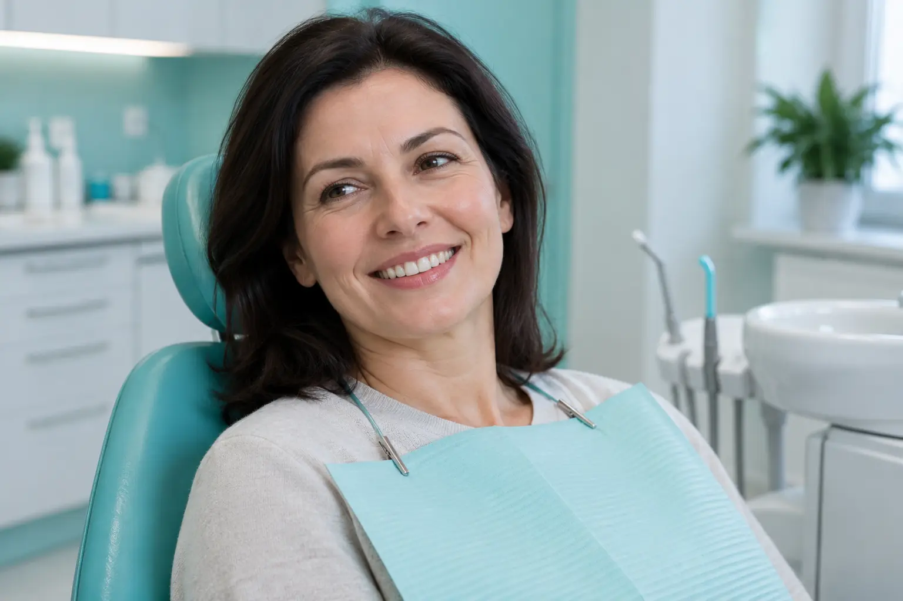

Dantų balinimo konsultacija: natūrali spalva, restauracijos ir metodų ribos
Autorius: Madbeauty redakcija · Numatyta 2026 m. gruodžio 8 d. 16:00 (Lietuvos laiku)
Sužinokite, kuo balinant skiriasi natūralių dantų ir plombų ar vainikėlių spalva, ką įvertinti prieš renkantis paslaugą ir kaip patikrinti jos teikėją.

Dantų balinimo konsultacijoje svarbu suderinti tikslą su tuo, kas gali keistis: balinimas veikia natūralių dantų spalvą, bet nekeičia plombų ar vainikėlių spalvos. Jei restauracijos yra matomoje vietoje, po balinimo jų atspalvis gali skirtis nuo natūralių dantų. NHS informacija apie dantų balinimą paaiškina šį skirtumą; ji nenustato, koks rezultatas bus konkrečiam žmogui.
Natūralūs dantys ir restauracijos
Jei priekinėje srityje yra plomba ar vainikėlis, vien tik norimas šviesesnis atspalvis neatsako, ar po balinimo visų matomų dantų spalva atrodys vienoda. Natūralių dantų spalva gali pasikeisti, o restauracijos spalva nepasikeičia balinant. Odontologas gali įvertinti restauracijų vietą, burnos būklę ir tai, ar jūsų tikslas yra realistiškas. Kad restauraciją reikės keisti, iš anksto nuspręsti negalima.
Kaip palyginti pasiūlymą
Pasiūlyme atskirkite tris dalykus: kokia yra produkto ar metodo paskirtis, kokie darbai įtraukti į paslaugą ir kas įvertins individualų atvejį. Pavadinimas „dantų balinimas“ pats savaime neatskleidžia konkretaus produkto, konsultacijos apimties ar procedūros sąlygų. Ši informacija leidžia palyginti du pasiūlymus pagal jų turinį, o ne vien pagal pavadinimą.
- Iliustracinė situacija: norite šviesesnių priekinių dantų, tarp jų yra matoma plomba. Įvertinkite, ar jums priimtina galimybė, kad natūralus dantis pašviesės, o plomba išliks dabartinio atspalvio.
- Jei svarbiausia vientisa matomų dantų spalva, pirmiausia aptarkite restauracijos ir natūralių dantų atspalvio skirtumą su odontologu. Ar reikia kokio nors papildomo sprendimo, priklauso nuo individualaus įvertinimo.
- Jei paslaugos aprašyme neaišku, koks produktas ar metodas siūlomas arba kas atliks įvertinimą, prieš sutikdami išsiaiškinkite šias konkrečios paslaugos sąlygas.
Ką gali reikšti konsultacija
Konsultacija padeda susieti norimą spalvos pokytį su burnos būkle ir konkrečiu pasiūlymu. Ji turėtų padėti suprasti, kokiam tikslui skirtas siūlomas metodas, kas įeina į paslaugą ir kokių rezultatų negalima pažadėti iš anksto. Individualus tinkamumas ir restauracijų klausimai priklauso odontologo vertinimui; vien reklaminis paslaugos pavadinimas šių dalykų neatsako.
Kaip patikrinti odontologinės paslaugos teikėją
Kai pasiūlymas teikiamas kaip sveikatos priežiūros paslauga, tikrinkite ne vien specialisto, bet ir įstaigos dokumentus, jų apimtį bei nurodytą veiklos vietą. VASPVT paaiškinimas apie sveikatos paslaugų teisėtumo patikrą pateikia bendrą patikros principą. Odontologų rūmai atskirai aprašo odontologų ir burnos priežiūros specialistų licencijų priežiūrą bei įstaigos dokumentus: specialistų licencijų priežiūra ir įstaigos dokumentai ir licencija. Tai bendras tikrinimo kelias, o ne konkretaus teikėjo patvirtinimas.
Prieš apsispręsdami aiškiai įvardykite norimą pokytį, paminėkite matomas plombas ar vainikėlius ir išsiaiškinkite konkretaus pasiūlymo metodą bei apimtį. Taip galėsite įvertinti, ar siūloma paslauga atitinka jūsų tikslą ir ar aptarti galimi spalvos skirtumai.
Susiję gidai
Šaltiniai
- NHS · dantų balinimas · www.nhs.uk
- VASPVT · sveikatos paslaugų teisėtumo patikra · vaspvt.lrv.lt
- Odontologų rūmai: specialistų licencijų priežiūra · odontologurumai.lt
- Odontologų rūmai: įstaigos leidimai ir licencija · odontologurumai.lt